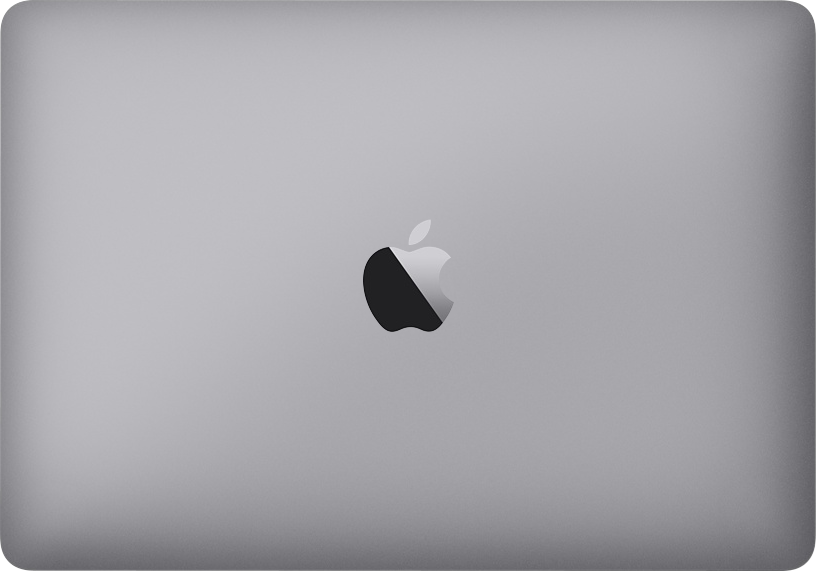
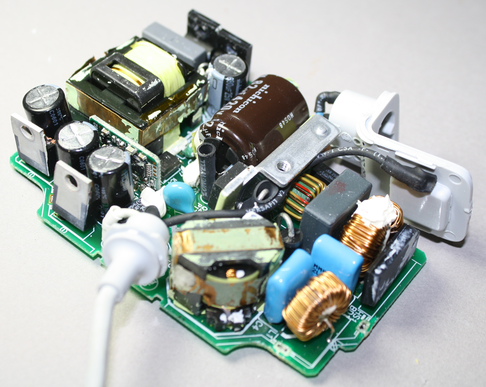
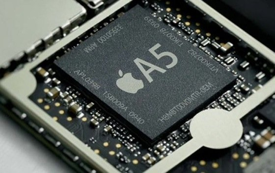
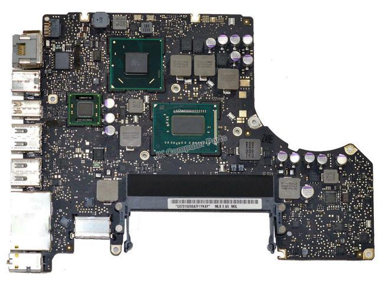
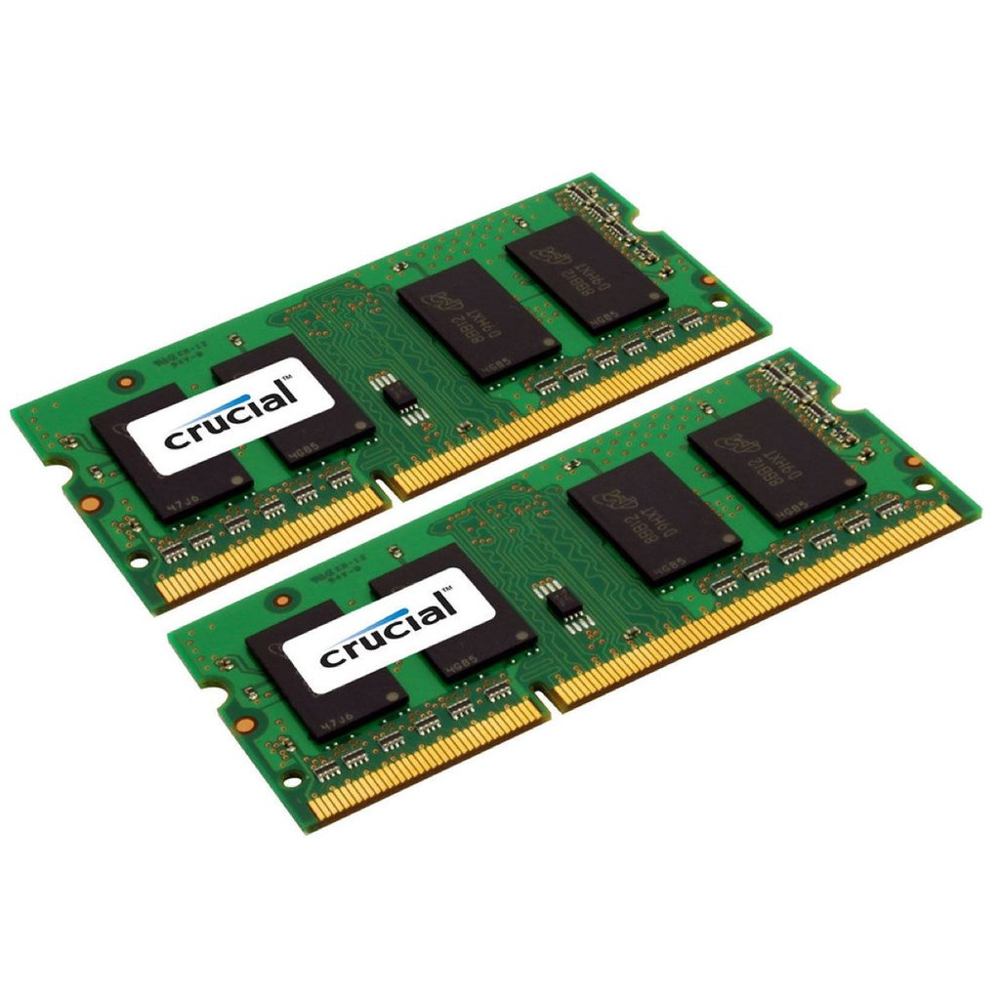
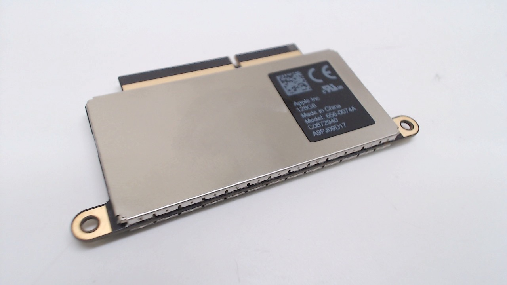
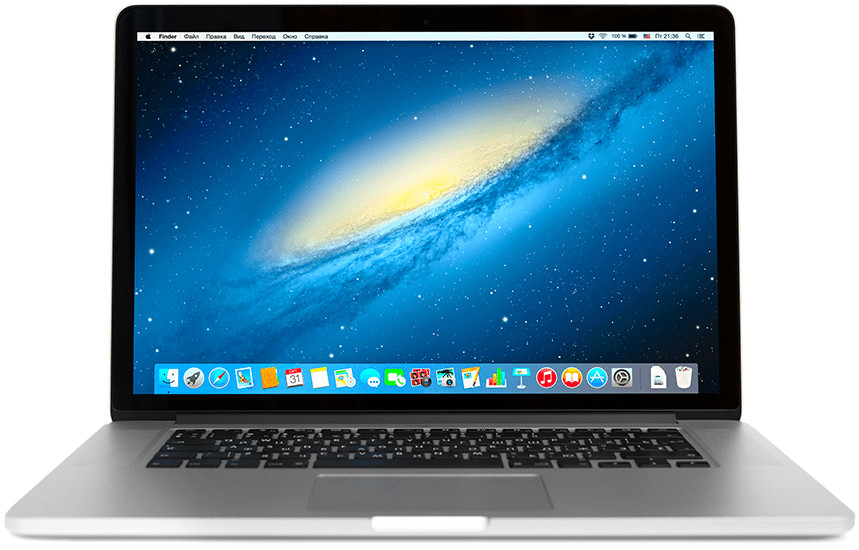

VanshPC.
VanshPC.
The State-of-the-Art Macbook Air offers some of
the best components available for a cost-effective price.
Laptop shells are the outside esthetic and mesh that holds all the inner components together. A necessity for any laptop or PC to function effectively and nicely. It helps with heat deprivation and longevity of the laptop in general.
Created with the best titanium material, this laptop shell offers protection and durability to last you a lifetime. With heat deprecation layers on the bottom, your computer will never overheat or have heating issues. You can trust the shell that everything will pan out and work for you. With layers upon layers, this laptop shell is made for the long-term and so you can go back to doing what you do best.
The power supply dictates and allows for the use of the internal components of the computer. Every part needs energy and it all comes from the power supply. It is connected to the outer adapter that gets power from plugs. Various power supplies indicates the efficiency of the power supply.
Apple’s patented custom power supply is custom made and tailored toward this exact computer. It offers It can handle 120 volts and 60 hertz to 240 volts and 50 hertz. Through its wide range, it allows to be used everywhere and anytime you need it, fulfilling its purpose as portable.It fits nicely inside the computer and has a wide variety of safety measures to protect it against liquids. Thoroughly patented for you.
The CPU or Central Processing Unit is responsible for all the calculations that happens on the computer and dictate all the processes that happen on the computer. It is essentially responsible for the computer's main functions. It dictates the functions and communications between different components to create a fast efficient system.
The Macbook Air uses the Intel i5 processor with 2 cores and can handle 1.6GHz. It can be overclocked to handle a maximum of 3.6GHz.
The motherboard allows the communication between all the components and dictates everything, essentially creating the system. It is the brain of the computer system and allows the computer to have functionality and to be cohesive. It has many sockets and plugs to allows all the systems to be connected.
The Macbook Air uses the A1286 motherboard. It is an industry leading motherboard and is tailored specifically for macbooks only. It is patented and manufactured by Apple.
The RAM holds and stores data in memory. It essentially allows for information to be quickly read and accessed. The higher the ram the more it can hold and the faster it tends to be.
The Macbook Air comes with 8gb of premium ram. It uses the Crucial DDR4-2666 SODIMM model for the best premium quality on the market.
The storage system holds all your files that you create and allows for mass storage. Storage system comes either in Hard Drives, HDs or Solid State Drives, SSDs. HDs usually hold more files however can be quite slow and SSDs are smaller but are much faster. SSDs are more usually preferred for PCs and laptops as people don’t usually have lots of files.
The Macbook Air comes with the choice of a 1 tb harddrive or a 256 gb ssd. 1 terabyte contains 1000gb and 1 gigabytes holds 1000 megabytes. It’s a great choice for personal use and you will probably be a sufficient amount of storage.
Display is how big the screen is and the resolution of the screen. Usually, the bigger the display, the better the quality. Must computers have a ratio of 16x9 resolution which is standard among all pc manufactures and what our society has come to like.
The display for the Macbook Air is 2560 x 1600 and has a screen of 13.3 inches. It managed RGB colour channels and allows for perfect quality and control. Tailored toward you, this industry standard makes sure that you aren’t left in the dark (literally).
Operating System is the graphical user interface the user sees to navigate their files and computer system. There are various operating systems out there that offer different modes of customizability. OS is what makes it easy for users to actually use the computer and is what the user sees the most.
Macbook Air uses Apples custom curated OS called “Sierra”. Sierra offers a nice clean file explorer and user interface to ease up life. Sierra is top-of-the-line and gives users an easy time for navigating their computer.